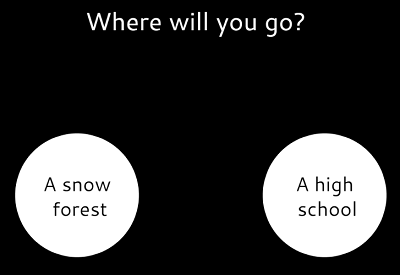

lifeUnlike
Click the image below to open in a new tab
Spring 2021, ART 101 Final Project.
A Javascript-based piece that follows the choose-your-own-adventure style in a story-rich narrative. Carve your own paths, starting from a variety of lives to begin your journey with. Depending which life you choose determines the overall setting for your adventure.. lest you choose the wrong path and must start over.